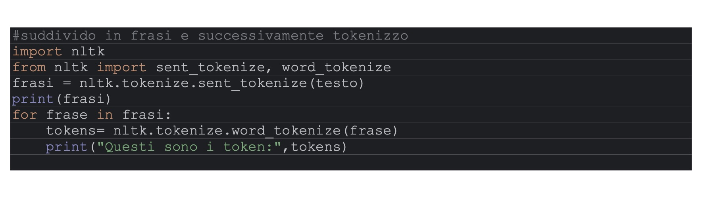
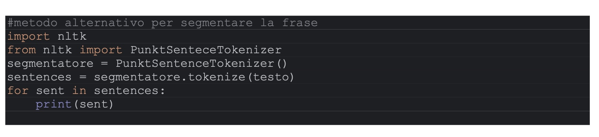
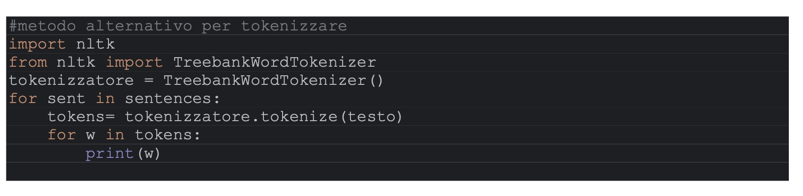
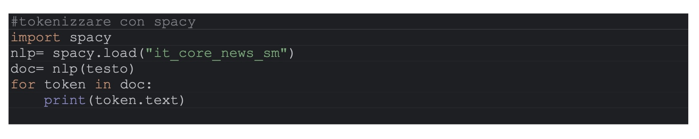

Per effettuare entrambe le operazioni ho importato il modulo nltk. Ho usato la funzione chiamata "sent_tokenize" per suddividere il testo in frasi e poi "word_tokenize" per estrarre i singoli token contenuti in ciascuna frase.
Per suddividere in frasi, avrei potuto usare anche altri metodi studiati quest'anno, come l'impostazione di un segmentatore tramite PunktSentenceTokenizer. Ecco un esempio:

Per la tokenizzazione, un'alternativa sarebbe l'utilizzo del tokenizzatore TreebankWordTokenizer. Ecco come:

Un altro approccio possibile è l'uso della libreria spacy per la tokenizzazione, ad esempio nel modo seguente:
